Stem borer (Diptera: Agromyzidae) in Arnoglossum
| Record no.: | 0075, 0078 |
|---|---|
| Feeding guild: | Stem borer |
| Taxonomy: | Diptera: Agromyzidae: Melanagromyza arnoglossi |
| Stages observed: | trace, larva, puparium, adult |
| Distribution observed: | IA |
| Hosts in Arnoglossum: | A. plantagineum (prairie indian-plantain); A. reniforme (great indian-plantain) |
I found puparia and a larva in stems of A. reniforme and A. plantagineum, with one or more adults reared from both hosts. In A. reniforme the larval tunnels were formed in the pithy inner lining of the hollow stems, while in A. plantagineum the relatively solid pith was riddled with the tunnels of several larvae per stem. Puparia from both hosts possess fairly strong black horns on the black posterior spiracular plates. It appears that the puparium is the typical overwintering stage. M. arnoglossi was described in Eiseman et al. (2021) using adults reared from A. reniforme.
A probable Melanagromyza that I believe to be a different species than M. arnoglossi tunnels in basal leaf petioles of A. reniforme in my study area (record 0686). The anterior and posterior spiracles of its puparium are noticeably different from those of M. arnoglossi.
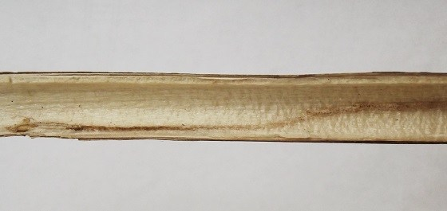
 Prev
Prev
{kind=link}
{kind=link}
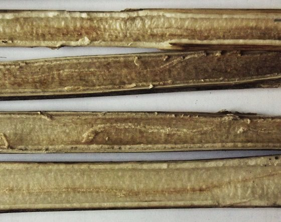
{kind=link}
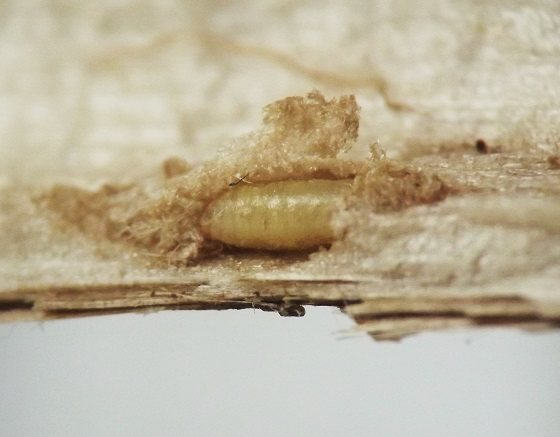
{kind=link}
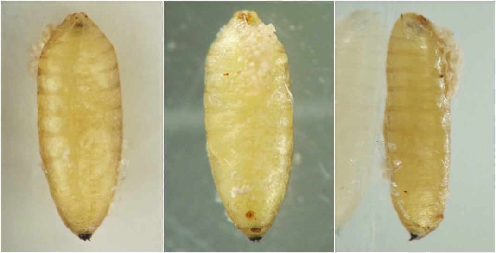
{kind=link}
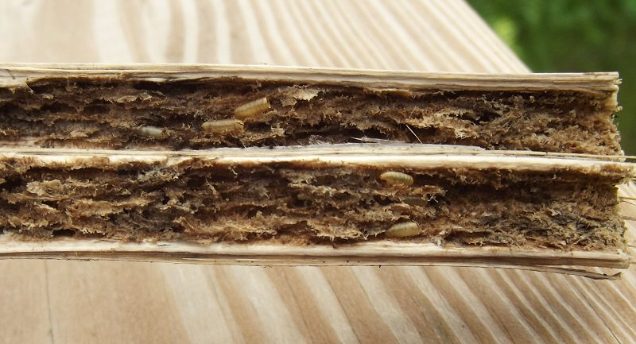
{kind=link}
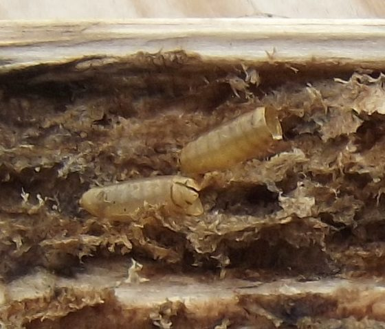
{kind=link}
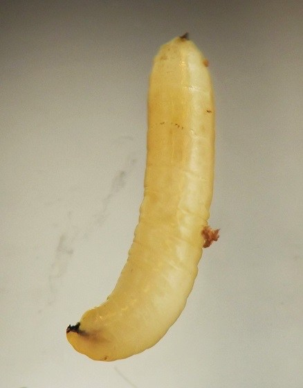
{kind=link}
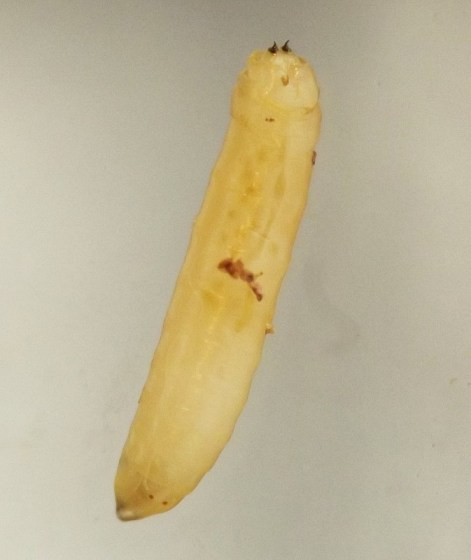
{kind=link}
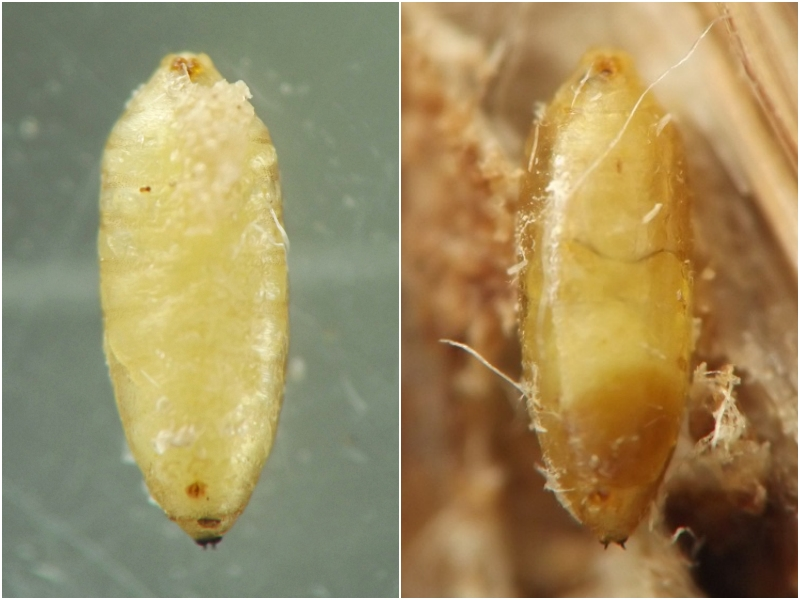
{kind=link}
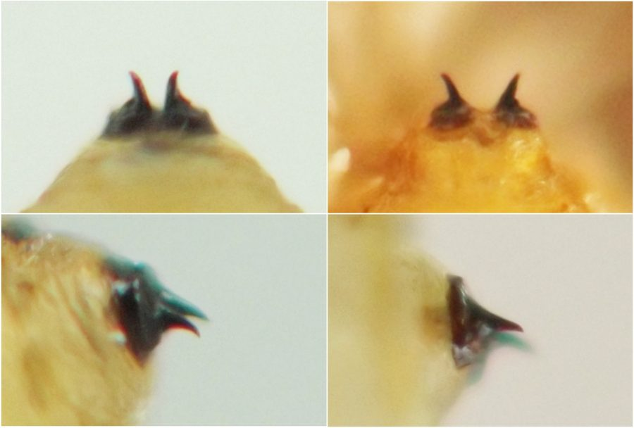
{kind=link}
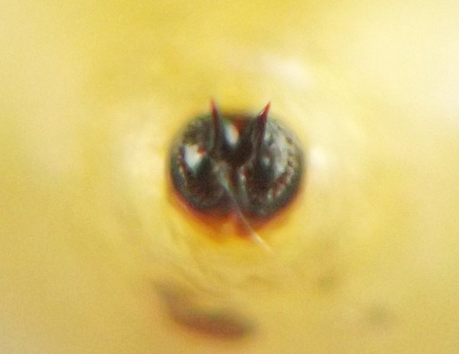
- Eiseman, C.S., Lonsdale, O., van der Linden, J., Feldman, T.S., and M.W. Palmer. 2021. Thirteen new species of Agromyzidae (Diptera) from the United States, with new host and distribution records for 32 additional species. Zootaxa 4931(1): 1–68.[return to in-text citation]
Page created: February 10, 2026. Last update: February 11, 2026